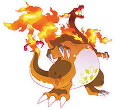

Dinamax es una mecánica introducida en la octava generación, en los videojuegos Pokémon Espada y Pokémon Escudo. Consiste en un fenómeno que hace que los Pokémon adquieran un tamaño gigantesco y tengan la capacidad de usar movimientos Dinamax. A los Pokémon dinamaxizados se les conoce como Maxi-Pokémon.
Descripción
En ciertos lugares de la región de Galar, durante los combates Pokémon, los entrenadores pueden dinamaxizar a sus Pokémon mediante una muñequera Dinamax, pero solo pueden hacerlo una vez por combate y el efecto termina después de tres turnos o cuando el Pokémon es cambiado por otro Pokémon. En las incursiones Dinamax el Pokémon salvaje conserva el estado durante todo el combate. El fenómeno Dinamax solo se activa en zonas determinadas de la región de Galar cercanas a un nodo energético, como por ejemplo, en los estadios donde se libran combates de gimnasio, combates en línea o los nidos del Área Silvestre, durante las incursiones Dinamax.
El icono usado para dinamaxizar Pokémon solo aparece en combates en los que Pokémon pueden experimentar el fenómeno Dinamax.
La textura y tamaño de la Poké Ball del Pokémon cambian cuando se activa el Dinamax. Cuando se activa este fenómeno en un Pokémon, primero el Pokémon regresa a su Poké Ball; segundo, la textura y el tamaño de la Poké Ball cambian, haciéndose hasta cuatro veces más grande; y tercero, cuando el entrenador vuelve a lanzar la Poké Ball, sale el Pokémon en su estado Maxi-Pokémon. Los Pokémon en este estado presentan una corona de nubes girando sobre su cabeza.
El fenómeno Dinamax es investigado por la profesora Magnolia.
Efectos

El fenómeno Dinamax causa que el Pokémon se haga mucho más grande. Esto incrementa sus PS, dejando el resto de estadísticas iguales. La cantidad de PS que aumentan dependen del nivel Dinamax de cada Pokémon. Además, todos sus movimientos cambian, sustituyéndose por movimientos Dinamax. Estos tienen efectos secundarios como invocar distintos climas, campos o aumentar o disminuir características.
Zacian, Zamazenta y Eternatus, o Pokémon transformados en ellos, no pueden dinamaxizarse.
Nivel Dinamax

El nivel Dinamax de un Pokémon indica cuánto aumentan sus PS al dinamaxizarse o gigamaxizarse. Este nivel puede aumentarse mediante el uso de caramelos Dinamax, aunque alguno de los Pokémon que se obtienen en incursiones Dinamax poseen este nivel aumentado. El aumento de PS a cada nivel Dinamax es el siguiente, oscilando entre 1,5 veces y 2 veces los PS originales entre los niveles 0 y 10:
Factor Gigamax

El factor Gigamax es una característica especial que poseen algunos Pokémon, que cambia el aspecto del Pokémon durante el fenómeno Dinamax. Este fenómeno es exclusivo de ciertas especies Pokémon, y solo ciertos Pokémon dentro de una misma especie poseen dicha característica. Por ejemplo, todos los Corviknight pueden dinamaxizarse, pero solo ciertos Corviknight pueden poseer este factor Gigamax. La capacidad de un Pokémon de tener el factor Gigamax se determina al ser capturado. Algunos de los Pokémon capturados en incursiones Dinamax son Pokémon que poseen este factor, pero son raros de encontrar.
Un Pokémon se sabe que tiene el factor Gigamax porque en la pantalla de datos, junto a su nombre, aparece un icono distintivo que lo identifica:
La energía Gigamax también les permite a los Pokémon en esta forma transformar los movimientos de categoría que no sean de estado y de un tipo específico en movimientos Gigamax, que cuentan con efectos adicionales únicos.
A partir de La isla de la armadura, si un Pokémon se toma la Maxisopa, si el Pokémon puede gigamaxizar, ese Pokémon será capaz de adquirir o perder el factor Gigamax.